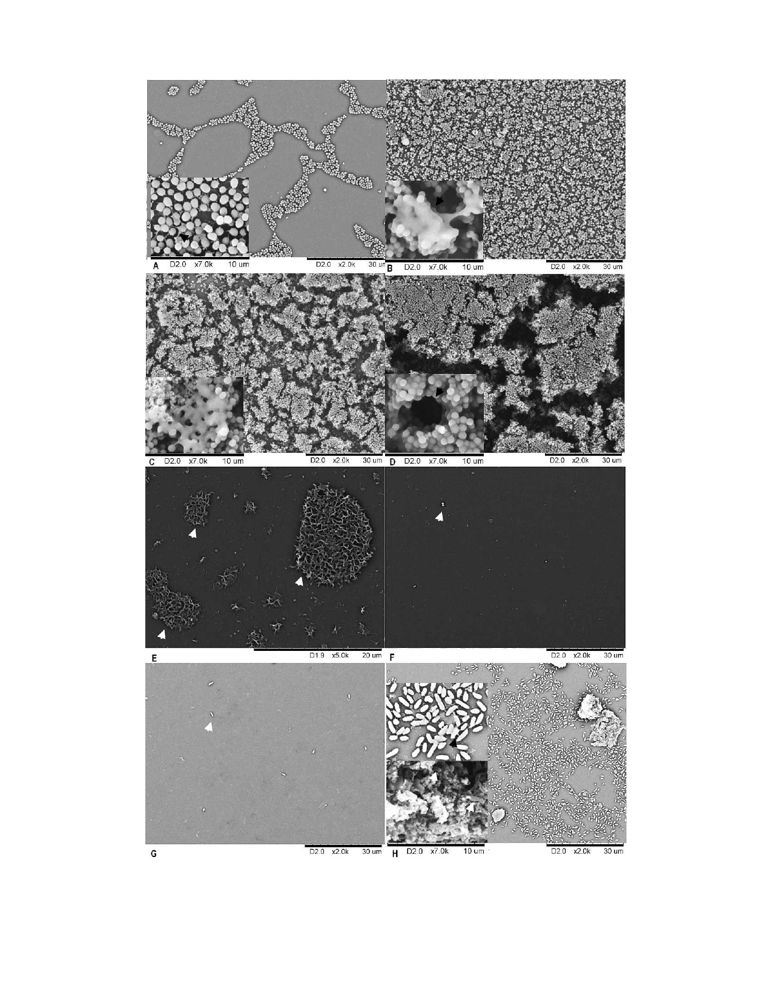

5628 Hou et al.
IOVS, August 2012, Vol. 53, No. 9
FIGURE 3. Results of scanning electron microscopy analysis. (A) After a 1 hour incubation, bacterial cells of biofilm-positive staphylococcal clinical
strain appeared to accumulate as small monolayer sheets (20003). Thread-like appendages (arrow) were found around the bacterial cells, and
projected from the bacterial cell wall toward the cover slip surface (70003). (B) For the biofilm-positive staphylococcal clinical strain, after a 6 hour
incubation, the previously small monolayer sheets developed into larger multilayer sheets (20003), and the bacterial cells became encased in an
mucoid material (arrow) (70003). (C) For the biofilm-positive staphylococcal clinical strain, after a 24 hour incubation, the 3D biofilm structure was
formed (20003), and bacterial clusters appeared to be coated on all sides with a gelatinous material (70003). (D) For the biofilm-positive
Downloaded from iovs.arvojournals.org on 12/12/2022